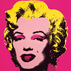
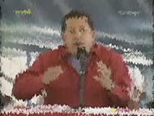
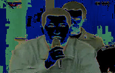
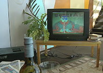
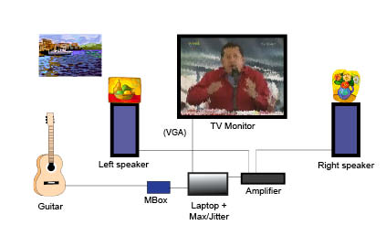

Installation-Concert, 2009
11'
for guitar + laptop with Max / Jitter, metronome, female
voice (live or recorded), TV monitor in a home environment "...media prison
of violence and vulgarity..."
It belongs
to the series of installations called "Imprisonments".
Premiere
Becket Hall, San Juan de Puerto Rico, 26/03/2010,
within the framework of the XVII Forum of Composers of
the Caribbean, Emilio Mendoza: guitar, Lennys Astorga,
recorded voice.
Other Important Performances
At the Joan Sutherland Performing Arts Center, Penrith,
Australia, on 02/05/2010, within the “World New Music
Days” Festival of the International Society of
Contemporary Music (ISCM), representing Venezuela.
Emilio Mendoza: guitar, with Ruth, a kind worker from
the festival coordination staff.
Interview on Australian TV
After the
Installation-Concert in Penrith, an
interview was conducted by Stephen Adams for the
Australian Broadcasting Corporation ABC Classic FM TV,
which has been included with Spanish subtitles.
Sin-Cadenas.tube
is an audiovisual installation in which a live
concert is performed with a "home theater"
setting which includes a TV. It is an allegory
of the sounds, images and objects present in
every Venezuelan home for more than twenty
years and the feelings of desperate
helplessness that arise in this situation in
more than half of the population of a whole
country: a television with the image of
President Chávez and his endless voice, in
what is known as "cadenas" (chains),
following similarly with his successor Maduro
until today.
When "chains" are imposed, all television and
radio signals remain connected to the same
official broadcast for countless hours every
day. In election times and until the last
moment before the vote, the channels function
as official electoral propaganda exceeding the
regulations of the National Electoral Council,
which represents an abominable advantage of
media coverage over opposition parties, with
the excuse that they are official
announcements.
In Sin-Cadenas.tube, Chávez's
iconographic and oral omnipresence in the
media, constantly interrupting regular
programs at peak audience hours, is
counteracted with a recording of the verbal
and rapid song of a woman (Lennys Astorga),
using religious phrases (fanaticism versus
fanaticism) and the live performance of
diatonic scales of the guitar anchored to the
metronome that, connected through a laptop
with the Max/Jitter software, gradually affect
the image of the televised "chain" in
real-time. It is a live video-graphic
creation, paraphrasing Andy Warhol's pop art
with his aesthetic visual interference of the
high media images of Marilyn Monroe, Mao, John
Lennon, Michael Jackson, among many others:
Andy Warhol pop-art examples:

Sin-Cadenas.tube
still images from performance:
  
The installation becomes an artistic protest
within the series of the author of his
concert-installations "Imprisonments",
as a metaphor for the current practice through the
YouTube platform, where personal videos abound
without possible censorship of the Venezuelan
government, as a naive alternative to the need for
freedom of expression and to be able to select
whatever one wants to see through the media,
already prisoners of other commercial and
ideological interests.
Little by little, the Chávez government has been
replacing commercial media with government media.
The reality
of the country has been completely reconstructed
by a media curtain manipulated accordingly for the
need to cover unwanted information such as
corruption scandals, disasters in the oil
industry, for example, and there is no way to know
what is true and what is not, but through the sea
of misinformation on the Internet, where, due to
its vast mistrust, we also find ourselves
completely lost. We are shipwrecked in an ocean of
information, floating adrift in a desert of lies.
In Sin-Cadenas.tube, three themes are used
that represent the fanaticism of Venezuelan
culture in the eyes of a person in the street and
in television, as they are the media heroes within
a controlled Orwellian thought: baseball, misses
and youth orchestras, all dressed up with the
Venezuelan flag in a mirage pride painted with
mass banality.
The rejection shouted rudely by Chávez against the
United States ("the empire"), our main client in
the oil industry on which we depend for millions
in revenues, is contrasted by these same three
aspects of Venezuelan culture, which all come from
the USA, and in the case of Dudamel and the youth
orchestras, his fame has been fueled by being a
conductor in Los Angeles, an icon of capitalist
success with the Rolex stamp of approval.
Of all the abusive, violent, and vulgar material
used by Chávez in his countless appearances on
television, video recordings were selected from
his aggressive reaction to the first time he lost
an electoral process in the referendum to change
the Constitution for a completely communist
version in 2007. The fanaticism of his figure
promoted by media insistence, a result of
propaganda and "chains" among other official
programs such as the program "Aló Presidente"
every Sunday, reached the level of praising him as
a semi-God by the other half of the nation, being
a leader that exerts an unforgivably rude
communication during all public hours, flooding
our cultural dignity, our space at home, our home
and family becoming a media prison of violence and
vulgarity.
Set-up:

+ Female voice, live or recorded,
verbalizing religious phrases at high speed
+ Live metronome
{kind=link}